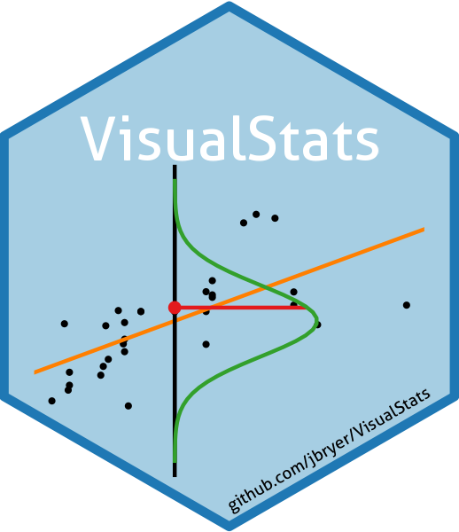

Authors: Jason Bryer, Ph.D. and Bruce Dudek, Ph.D.
Website: https://jbryer.github.io/VisualStats/
This package contains functions and Shiny applications designed to visualize statistical tests. The latest version can be installed from Github using the remotes package:
remotes::install_github('jbryer/VisualStats')The vignettes currently available:
library(VisualStats)
vignette(package = 'VisualStats')[['results']][,c('Item', 'Title'), drop = FALSE]
#> Item Title
#> [1,] "anova" "Graphical Analysis of Variance (source, html)"
#> [2,] "loess" "Loess Regression (source, html)"
#> [3,] "log_likelihood" "The Path to Log Likelihood (source, html)"
#> [4,] "mle" "Visual Introduction to Maximum Likelihood Estimation (source, html)"Shiny apps available. You can run the apps using the shiny_demo('APP_NAME') where APP_NAME is from the list below.
ShinyDemo::shiny_demo(package = 'VisualStats')
#> package app
#> 1 VisualStats anova
#> 2 VisualStats loess
#> 3 VisualStats mle
#> 4 VisualStats varianceAll available functions and datasets:
ls('package:VisualStats')
#> [1] "anova_vis" "get_numeric_vars" "hand_washing"
#> [4] "isBinary" "loess_vis" "logistic"
#> [7] "logit" "loglikelihood_binomial" "loglikelihood_normal"
#> [10] "optim_save" "plot_likelihood" "plot_linear_assumption_check"
#> [13] "shiny_mle" "variance_vis"Acknowledgments: Thanks to Bruce Dudek for comments and suggestions and to Jorge Cimentada’s blog post that inspired me to build this shiny application.